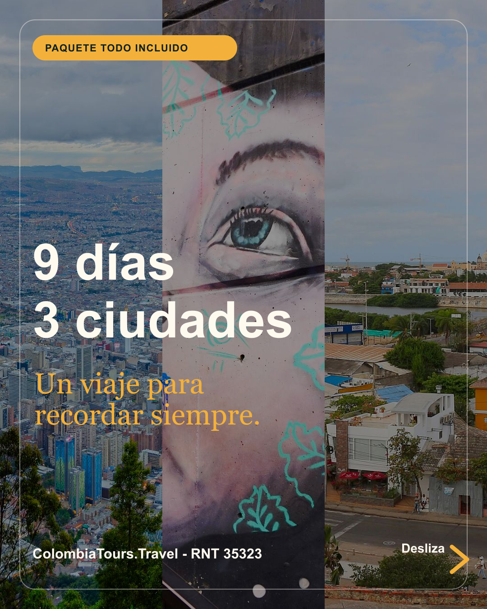
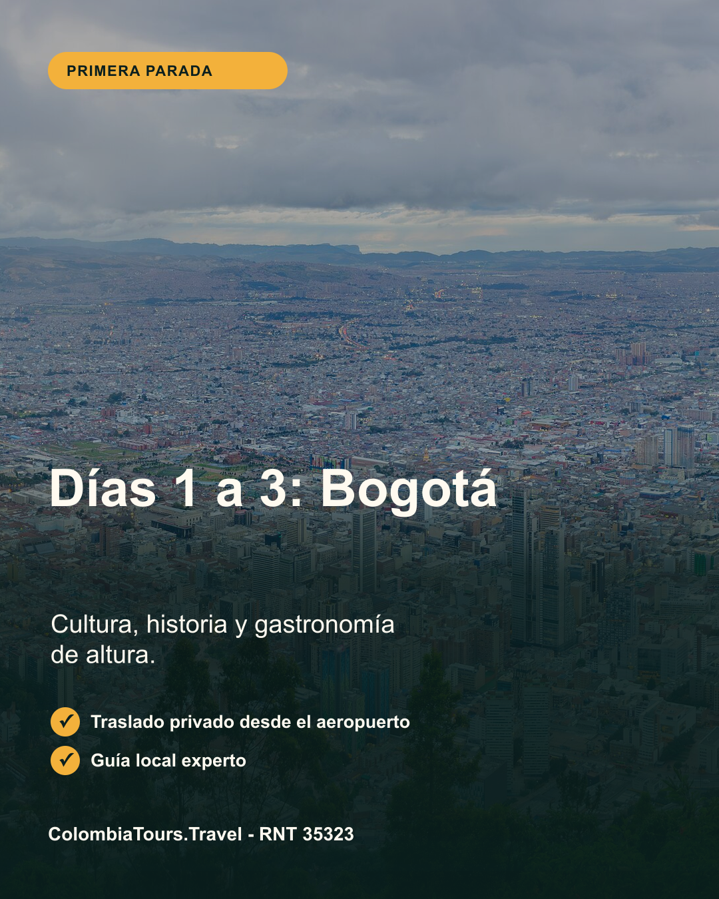
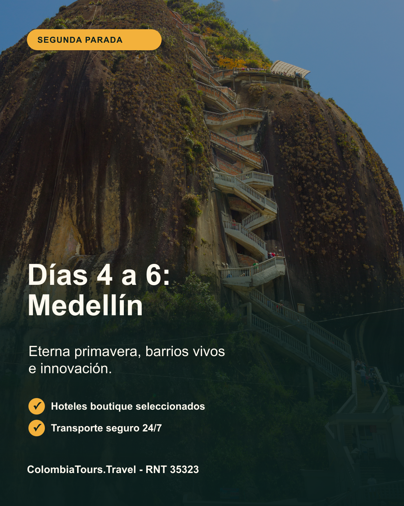
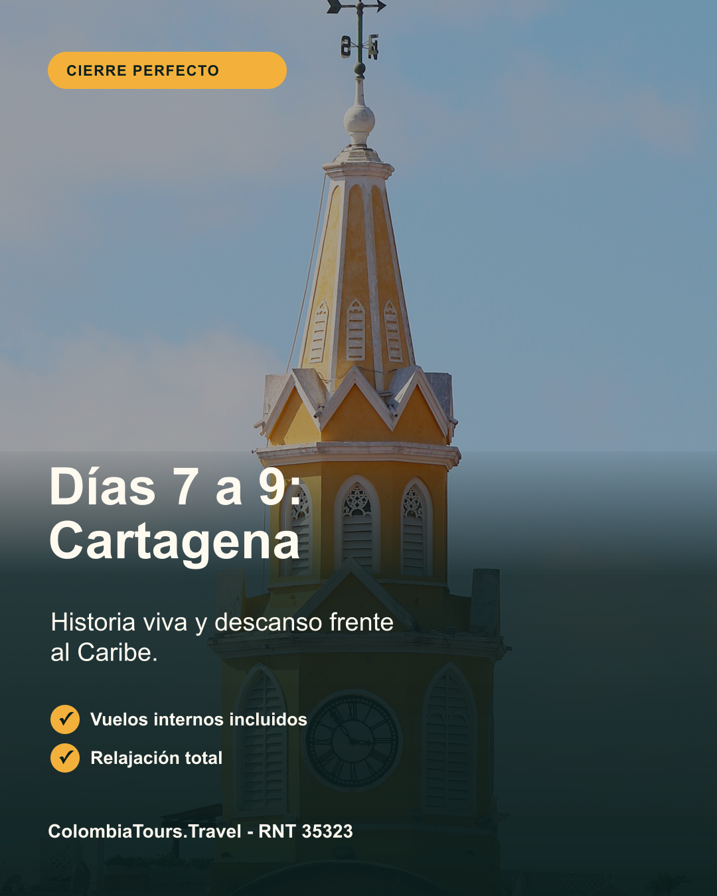
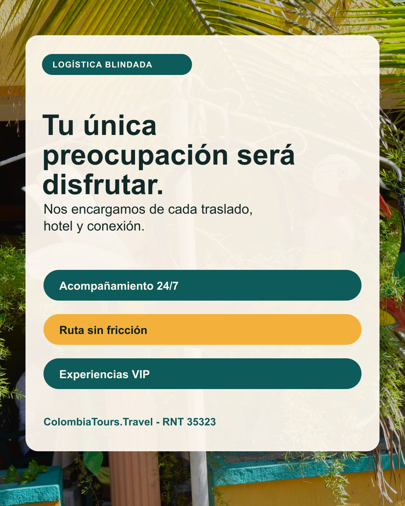
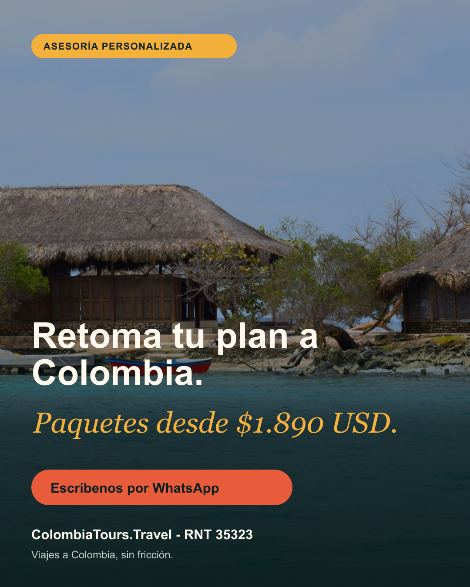

Colombia Imperdible 9 Días

1. 9 días 3 ciudades

2. Días 1 a 3: Bogotá

3. Días 4 a 6: Medellín

4. Días 7 a 9: Cartagena

5. Tu única preocupación será disfrutar.

6. Retoma tu plan a Colombia.